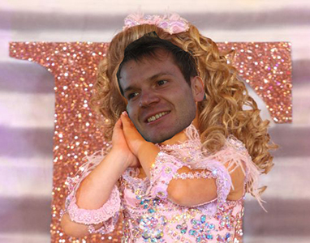

Introducing…
The Siyelo entourage of geeks has grown in the last couple of months, and the newcomers would like to say hi. They’ve put a lot of effort into this pageant, so do us a favor and humor them with a smile.
Stuart Corbishley takes the stage in a charming, floral evening gown in autumn colours. He has eight years of professional development experience singing soulful backup, five of them sporting the latest Ruby fashions. Stuart is an established photographer and says he hasn’t been this nervous since that HTML competition he won when he twelve. His first act as the new face of Siyelo will be to end world hunger.
A spotlight tracks Nic Young onto stage, scattering disco reflections off the sequins covering his otherwise classy cocktail dress. Three years of business analysis follow in tow, and he has seven years of development experience dancing backup. Six of them are busting Ruby moves, and one shameful stand-in rocks php like it’s ‘97. Nic is a published author of short fiction and appreciates a good playlist. If crowned Miss Siyelo he’d put a jumping castle in every home.
Thank you and good night.